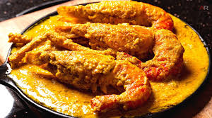

Chingri Malai Curry (Prawns in Coconut Gravy)

Ingredients
- Prawns – 500g
- Coconut milk – 2 cups
- Onion paste – 2 tbsp
- Ginger-garlic paste – 1 tbsp
- Turmeric – ½ tsp
- Garam masala – ½ tsp
- Oil – 3 tbsp
- Salt – to taste
Instructions
- Lightly fry prawns with turmeric and salt.
- Fry onion and ginger-garlic paste in oil.
- Add coconut milk and spices, stir well.
- Add prawns and simmer until the curry thickens.
Back